공조냉동기계산업기사 (2015-05-31 기출문제)
1과목: 공기조화
1. 극간풍의 풍량을 계산하는 방법으로 틀린 것은?
- 환기 횟수에 의한 방법
- 극간 길이에 의한 방법
- 창 면적에 의한 방법
- 재실 인원수에 의한 방법
(정답률: 86%)

2. 환기와 배연에 관한 설명으로 틀린 것은?
- 환기란 실내의 공기를 차거나 따뜻하게 만들기 위한 것이다.
- 환기는 급기 또는 배기를 통하여 이루어진다.
- 환기는 자연적인 방법, 기계적인 방법이 있다.
- 배연 설비란 화재 초기에 발생하는 연기를 제거하기 위한 설비이다.
(정답률: 89%)
3. 공기조화방식 분류 중 전공기방식이 아닌 것은?
- 멀티존 유닛방식
- 변풍량 재열식
- 유인유닛방식
- 정풍량식
(정답률: 76%)
4. 다음 분류 중 천장 취출방식이 아닌 것은?
- 아네모스탯형
- 브리즈 라인형
- 팬형
- 유니버설형
(정답률: 57%)
5. 다음 중 엔탈피의 단위는?
- kcal/kg·℃
- kcal/kg
- kcal/m2·h·℃
- kcal/m·h·℃
(정답률: 76%)
6. 다음의 표시된 백체의 열관류율은? (단, 내표면의 열전달률 ai=8kcal/m2·h·℃, 외표면의 열전도율 ao=20kcal/m2·h·℃, 벽돌의 열전도율 λa=0.5kcal/m·h·℃, 단열재의 열전도율 λb=0.03kcal/m·h·℃, 모르터의 열전도율 λc=0.62kcal/m·h·℃이다.)
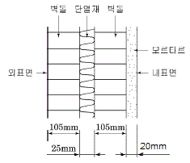
- 0.685kcal/m2·h·℃
- 0.778kcal/m2·h·℃
- 0.813kcal/m2·h·℃
- 1,460kcal/m2·h·℃
(정답률: 52%)
7. 다음 중 현열부하에만 영향을 주는 것은?
- 건구온도
- 절대습도
- 비체적
- 상대습도
(정답률: 66%)
8. 전열량의 변화와 절대습도 변화의 비율을 무엇이라고 하는가?
- 현열비
- 포화비
- 열수분비
- 절대비
(정답률: 73%)
9. 유인 유닛 공조방식에 대한 설명으로 옳은 것은?
- 실내환경 변화에 대응이 어렵다.
- 덕트 공간이 비교적 크다.
- 각 실의 제어가 어렵다.
- 회전부분이 없어 동력(전기) 배선이 필요없다.
(정답률: 71%)
10. 습공기 선도상에서 확인할 수 있는 사항이 아닌 것은?
- 노점 온도
- 습공기의 엔탈피
- 효과 온도
- 수증기 분압
(정답률: 67%)
11. 공기조화의 냉수코일을 설계하고자 할 때의 설명으로 틀린 것은?
- 코일을 통과하는 물의 속도는 1m/s 정도가 되도록 한다.
- 코일 출입구의 수온 차는 대개 5~10℃ 정도가 되도록 한다.
- 공기와 물의 흐름은 병류(평행류)로 하는 것이 대수평균 온도차가 크게 된다.
- 코일의 모양은 효율을 고려하여 가능한 한 정방형으로 본다.
(정답률: 79%)
12. 전공기식 공기조화에 관한 설명으로 틀린 것은?
- 덕트가 소형으로 되므로 스페이스가 작게 된다.
- 송풍량이 충분하므로 실내공기의 오염이 적다.
- 중앙집중식이므로 운전, 보수관리를 집중화할 수 있다.
- 병원의 수술실과 같이 높은 공기의 청정도를 요구하는 곳에 적합하다.
(정답률: 81%)
13. 펌프를 작동원리에 따라 분류할 때 왕복펌프에 해당되지 않는 것은?
- 피스톤 펌프
- 베인 펌프
- 다이어프램 펌프
- 플런저 펌프
(정답률: 76%)
14. 다음과 같은 사무실에서 방열기 설치위치로 가장 적당한 것은?
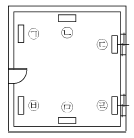
- [㉠, ㉡]
- [㉡, ㉤]
- [㉢, ㉣]
- [㉣, ㉥]
(정답률: 89%)
15. 덕트의 설계법을 순서대로 나열한 것 중 가장 바르게 연결한 것은?
- 송풍량 결정 - 덕트경로 결정 - 덕트치수 결정 - 취출구 및 흡입구 위치결정 - 송풍기 선정 - 설계도 작성
- 송풍량 결정 - 취출구 및 흡입구 위치 결정 - 덕트경로 설정 - 덕트치수 결정 - 송풍기 선정 - 설계도 작성
- 덕트치수 결정 - 송풍량 결정 - 덕트경로 결정 - 취출구 및 흡입구 위치 결정 - 송풍기 선정 - 설계도 작성
- 덕트치수 결정 - 덕트경로 결정 - 취출구 및 흡입구위치 결정 - 송풍량 결정 - 송풍기 선정 - 설계도 작성
(정답률: 74%)
16. 다음의 습공기 선도상에서 E-F는 무엇을 나타내는 것인가?
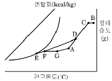
- 가습
- 재열
- CF(Contact Factor)
- BF(By-pass Factor)
(정답률: 80%)
17. 공조용 가습장치 중 수분무식에 해당하지 않는 것은?
- 원심식
- 초음파식
- 분무식
- 적하식
(정답률: 79%)
18. 덕트의 직관부를 통해 공기가 흐를 때 발생하는 마찰저항에 대한 설명 중 틀린 것은?
- 관의 마찰 저항계수에 비례한다.
- 덕트의 지름에 반비례한다.
- 공기의 평균속도의 제곱에 비례한다.
- 중력 가속도의 2배에 비례한다.
(정답률: 65%)
19. 다음 장치도 및 t-x선도와 같이 공기를 혼합하여 냉각, 재열한 후 실내로 보낸다. 여기서, 외기부하를 나타내는 식은? (단, 혼합공기량은 G(kg/h)이다.)
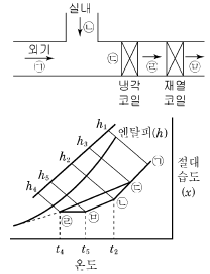
- q=G(h3-h4)
- q=G(h1-h3)
- q=G(h5-h4)
- q=G(h3-h2)
(정답률: 66%)
20. 습공기를 냉각하게 되면 공기의 상태가 변화한다. 이때 증가하는 상태값은?
- 건구온도
- 습구온도
- 상대습도
- 엔탈피
(정답률: 58%)
2과목: 냉동공학
21. 이상 기체를 체적이 일정한 상태에서 가열하면 온도와 압력은 어떻게 변하는가?
- 온도가 상승하고 압력도 높아진다.
- 온도는 상승하고 압력은 낮아진다.
- 온도는 저하하고 압력은 높아진다.
- 온도가 저하하고 압력도 낮아진다.
(정답률: 75%)
22. 그림과 같은 이론 냉동 사이클이 적용된 냉동장치의 성적계수는? (단, 압축기의 압축효율 80%, 기계효율 85%로 한다.)
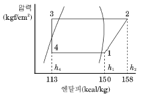
- 2.4
- 3.1
- 4.4
- 5.1
(정답률: 63%)
23. 단열재의 선택요건에 해당되지 않는 것은?
- 열전도도가 크고 방습성이 클 것
- 수축변형이 적을 것
- 흡수성이 없을 것
- 내압강도가 클 것
(정답률: 83%)
24. 팽창밸브로 모세관을 사용하는 냉동장치에 관한 설명 중 틀린 것은?
- 교축 정도가 일정하므로 증발부하 변동에 따라 유량조절이 불가능하다.
- 밀폐형으로 제작되는 소형 냉동장치에 적합하다.
- 내경이 크거나 길이가 짧을수록 유체저항의 감소로 냉동능력은 증가한다.
- 감압정도가 크면 냉매 순환량이 적어 냉동능력을 감소시킨다.
(정답률: 45%)
25. 4마력(PS)기관이 1분간에 하는 일의 열당량은?
- 약 0.042kcal
- 약 0.42kcal
- 약 4.2kcal
- 약 42.1kcal
(정답률: 71%)
26. 수냉식 응축기에 대한 설명 중 옳은 것은?
- 냉각수량이 일정한 경우 냉각수 입구온도가 높을수록 응축기내의 냉매는 액화하기 쉽다.
- 종류에는 입형 셀 튜브식, 7통로식, 지수식 응축기 등이 있다.
- 이중관식 응축기는 냉매증기와 냉각수를 평행류로 함으로써 냉각수량이 많이 필요하다.
- 냉각수의 증발잠열을 이용해 냉매가스를 냉각한다.
(정답률: 66%)
27. 프레온 냉동장치에서 유분리기를 설치하는 경우가 아닌 것은?
- 만액식 증발기를 사용하는 장치의 경우
- 증발온도가 높은 냉동장치의 경우
- 토출가스 배관이 긴 경우
- 토출가스에 다량의 오일이 섞여나가는 경우
(정답률: 49%)
28. 2원냉동 사이클에서 중간열교환기인 캐스케이트 열교환기의 구성은 무엇으로 이루어져 있는가?
- 저온측 냉동기의 응축기와 고온측 냉동기의 증발기
- 저온측 냉동기의 증발기와 고온측 냉동기의 응축기
- 저온측 냉동기의 응축기와 고온측 냉동기의 응축기
- 저온측 냉동기의 증발기와 고온측 냉동기의 증발기
(정답률: 72%)
29. 프레온계 냉동장치의 배관재료로 가장 적당한 것은?
- 철
- 강
- 동
- 마그네슘
(정답률: 84%)
30. 카르노 사이클의 기관에서 20℃와 300℃ 사이에서 작동하는 열기관의 열효율은?
- 약 42%
- 약 48%
- 약 52%
- 약 58%
(정답률: 59%)
31. 열에 대한 설명으로 옳은 것은?
- 온도는 변화하지 않고 물질의 상태를 변화시키는 열은 잠열이다.
- 냉동에는 주로 이용되는 것은 현열이다.
- 잠열은 온도계로 측정할 수 있다.
- 고체를 기체로 직접 변화시키는데 필요한 승화열은 감열이다.
(정답률: 80%)
32. 몰리에르 선도에 대한 설명 중 틀린 것은?
- 과열구역에서 등엔탈피선은 등온선과 거의 직교한다.
- 습증기 구역에서 등온선과 등압선은 평행하다.
- 습증기 구역에서만 등건조도선이 존재한다.
- 등비체적선은 과열 증기구역에서도 존재한다.
(정답률: 66%)
33. 만액식 증발기의 특징으로 가장 거리가 먼 것은?
- 전열작용이 건식보다 나쁘다.
- 증발기 내에 액을 가득 채우기 위해 액면제어 장치가 필요하다.
- 액과 증기를 분리시키기 위해 액분리기를 설치한다.
- 증발기 내에 오일이 고일 염려가 있으므로 프레온의 경우 유회수장치가 필요하다.
(정답률: 69%)
34. 건식 증발기의 종류에 해당되지 않는 것은?
- 셀 코일식 냉각기
- 핀 코일식 냉각기
- 보델로 냉각기
- 플레이트 냉각기
(정답률: 69%)
35. 제빙능력이 50ton/day, 제빙원수 온도가 5℃, 제빙된 얼음의 평균온도가 -6℃일 때, 제빙조에 설치된 증발기의 냉동부하는? (단, 물의 비열은 1kcal/kg·℃, 얼음의 비열은 0.5kcal/kg·℃, 물의 응고잠열은 80kcal/kg이다.)
- 약 162400kcal/h
- 약 183333kcal/h
- 약 185220kcal/h
- 약 193515kcal/h
(정답률: 59%)
36. 12kW 펌프의 회전수가 800rpm, 토출량 1.5m3/min인 경우 펌프의 토출량을 1.8m3/min으로 하기 위하여 회전수를 얼마로 변화하면 되는가?
- 850rpm
- 960rpm
- 1025rpm
- 1365rpm
(정답률: 62%)
37. 액체나 기체가 갖는 모든 에너지를 열량의 단위로 나타나낸 것을 무엇이라고 하는가?
- 엔탈피
- 외부에너지
- 엔트로피
- 내부에너지
(정답률: 75%)
38. 밀폐계에서 실린더 내에 0.2kg의 가스가 들어있다. 이것을 압축하기 위하여 1200kg·m의 일을 소비할 때, 1kcal의 열을 주위에 방출한다면 가스 1kg당 내부에너지의 증가는? (단, 위치 및 운동에너지는 무시한다.)
- 약 5.41kcal/kg
- 약 7.65kcal/kg
- 약 9.⑤kcal/kg
- 약 11.43kcal/kg
(정답률: 40%)
39. 간접 냉각 냉동장치에 사용하는 2차 냉매인 브라인이 갖추어야 할 성질로 틀린 것은?
- 열전달 특성이 좋아야 한다.
- 부식성이 없어야 한다.
- 비등점이 높고, 응고점이 낮아야 한다.
- 점성이 커야 한다.
(정답률: 81%)
40. 암모니아 냉매의 특성이 아닌 것은?
- 수분을 함유한 암모니아는 구리와 그 합금을 부식시킨다.
- 대규모 냉동장치에 널리 사용되고 있다.
- 물과 윤활유에 잘 용해된다.
- 독성이 강하고, 강한 자극성을 가지고 있다.
(정답률: 76%)
3과목: 배관일반
41. 다음의 경질염화 비닐관에 대한 설명 중 틀린 것은?
- 전기 절연성이 좋으므로 전기부식 작용이 없다.
- 금속관에 비해 차음효과가 크다.
- 열전도율이 동관보다 크다.
- 극저온 및 고온배관에 부적당하다.
(정답률: 74%)
42. 건축설비의 급수배관에서 기울기에 대한 설명으로 틀린 것은?
- 급수관의 모든 기울기는 1/250을 표준으로 한다.
- 배관 기울기는 관의 수리 및 기타 필요 시 관내의 물을 완전히 퇴수시킬 수 있도록 시공하여야 한다.
- 배관 기울기는 관 내 흐르는 유체의 유속과 관련이 없다.
- 옥상 탱크의 수평 주관은 내림 기울기를 한다.
(정답률: 82%)
43. 급탕 배관에서 안전을 위해 설치하는 팽창관의 위치는 어느 곳인가?
- 급탕관과 반탕관 사이
- 순환펌프와 가열장치 사이
- 반탕관과 순환펌프 사이
- 가열장치와 고가탱크 사이
(정답률: 67%)
44. 일반적으로 루프형 신축이음의 굽힘 반경은 사용관경의 몇 배 이상으로 하는가?
- 1배
- 3배
- 4배
- 6배
(정답률: 66%)
45. 고압증기 난방에서 환수관이 트랩 장치보다 높은 곳에 배관 되었을 때 버킷 트랩이 응축수를 리프팅 하는 높이는 증기 파이프와 환수관의 압력차 1kg/cm2에 대하여 얼마로 하는가?
- 2m 이하
- 5m 이하
- 8m 이하
- 11m 이하
(정답률: 68%)
46. 기수 혼합식 급탕기를 사용하여 물을 가열할 때 열 효율은?
- 100%
- 90%
- 80%
- 70%
(정답률: 69%)
47. 밸브의 일반적인 기능으로 가장 거리가 먼 것은?
- 관내 유량 조절 기능
- 관내 유체의 유동 방향 전환 기능
- 관내 유체의 온도 조절 기능
- 관내 유체 유동의 개폐 기능
(정답률: 82%)
48. 고가 탱크식 급수설비에서 급수경로를 바르게 나타 낸 것은?
- 수도본관 → 저수조 → 옥상탱크 → 양수관 → 급수관
- 수도본관 → 저수조 → 양수관 → 옥상탱크 → 급수관
- 저수조 → 옥상탱크 → 수도본관 → 양수관 → 급수관
- 저수조 → 옥상탱크 → 양수관 → 수도본관 → 급수관
(정답률: 72%)
49. 온수난방과 비교하여 증기난방 방식의 특징이 아닌 것은?
- 예열시간이 짧다.
- 배관부식 우려가 적다.
- 용량제어가 어렵다.
- 동파우려가 크다.
(정답률: 61%)
50. 탄성이 크고 엷은 산이나 알칼리에는 침해되지 않으나 열이나 기름에 약하며, 급수, 배수, 공기 등의 배관에 쓰이는 패킹은?
- 고무 패킹
- 금속 패킹
- 글랜드 패킹
- 액상 합성수지
(정답률: 81%)
51. 고온수 난방의 배관에 관한 설명으로 옳은 것은?
- 온수 순환력이 작아 순환펌프가 필요하다.
- 고온수 난방에서는 개방식 팽창탱크를 사용한다.
- 관내 압력이 높기 때문에 관 내면의 부식문제가 증기 난방에 비해 심하다.
- 특수 고압기기가 필요하고 취급 관리가 복잡 곤란하다.
(정답률: 54%)
52. 관의 용접이음에 대한 설명으로 가장 거리가 먼 것은?
- 돌기부가 없어서 보온시공이 용이하다.
- 나사이음보다 이음부의 강도가 크고 누수의 우려가 적다.
- 누설의 염려가 없고 시설유지비가 절감된다.
- 관 두께의 불균일한 부분으로 인해 유체의 압력 손실이 크다.
(정답률: 80%)
53. 배관이 바닥 또는 벽을 관통할 때 슬리브(sleeve)를 사용하는데 그 이유로 가장 적당한 것은?
- 방진을 위하여
- 신축흡수 및 수리를 용이하게 하기 위하여
- 방식을 위하여
- 수격작용을 방지하기 위하여
(정답률: 84%)
54. 난방, 급탕, 급수배관의 높은 곳에 설치되어 공기를 제거하여 유체의 흐름을 원활하게 하는 것은?
- 안전밸브
- 에어벤트밸브
- 팽창밸브
- 스톱밸브
(정답률: 84%)
55. 냉매 배관 시 주의 사항으로 틀린 것은?
- 배관은 가능한 한 간단하게 한다.
- 굽힘 반지름은 작게 한다.
- 관통 개소외에는 바닥에 매설하지 않아야 한다.
- 배관에 응력이 생길 우려가 있을 경우에는 신축이음으로 배관한다.
(정답률: 80%)
56. 오수만을 정화조에서 단독으로 정화처리한 후 공공하수도에 방류하는 반면에 잡배수 및 우수는 그대로 공공하수도로 방류되는 방식은?
- 합류식
- 분류식
- 단독식
- 일체식
(정답률: 71%)
57. 급수배관에 관한 설명으로 틀린 것은?
- 배관시공은 마찰로 인한 손실을 줄이기 위해 최단거리로 배관한다.
- 주배관에는 적당한 위치에 플랜지 이음을 하여 보수점검을 용이하게 한다.
- 불가피하게 산형배관이 되어 공기가 체류할 우려가 있는 곳에는 공기실(air chamber)을 설치한다.
- 수질의 오염을 방지하기 위하여 수도꼭지를 설치할 때는 토수구 공간을 충분히 확보한다.
(정답률: 65%)
58. 도시가스 배관을 매설할 경우 기준으로 틀린 것은?
- 배관의 외면으로부터 도로의 경계까지 1m이상 수평거리를 유지할 것
- 배관을 철도부지에 매설하는 경우에는 배관의 외면으로부터 궤도 중심까지 4m 이상
- 시가지 외의 도로노면 밑에 매설하는 경우에는 노면으로부터 배관의 외면까지 깊이를 2m 이상으로 할 것
- 인도 등 노면 외의 도로 밑에 매설하는 경우에는 지표면으로부터 배관의 외면까지 깊이를 1.2m 이상으로부터 할 것
(정답률: 65%)
59. 냉매배관의 시공 시 유의사항으로 틀린 것은?
- 배관재료는 각각의 용도, 냉매종류, 온도 등에 의해 선택한다.
- 온도배관에 의한 배관의 신축을 고려한다.
- 배관 중에 불필요하게 오일이 체류하지 않도록 한다.
- 관경은 가급적 작게 하여 플래쉬 가스의 발생을 줄인다.
(정답률: 84%)
60. 유체의 저항은 크나 개폐가 쉽고 유량 조절이 용이하며, 직선 배관 중간에 설치하는 밸브는?
- 슬루스 밸브
- 글로브 밸브
- 체크 밸브
- 전동 밸브
(정답률: 72%)
4과목: 전기제어공학
61. 전력량 1kWh는 몇 kcal의 열량을 낼 수 있는가?
- 4.3
- 8.6
- 430
- 860
(정답률: 78%)
62. 절연저항을 측정하는데 사용되는 것은?
- 후크온 메타
- 회로시험기
- 메거
- 휘이트스톤 브리지
(정답률: 74%)
63. 출력이 입력에 전혀 영향을 주지 못하는 제어는?
- 프로그램제어
- 피드백제어
- 시퀀스제어
- 폐회로제어
(정답률: 64%)
64. 제어계의 특성방정식이 s2+as+b=0일 때 안정조건은?
- a＞0, b＞0
- a=0, b＜0
- a＜0, b＜0
- a＞0, b＜0
(정답률: 69%)
65. 그림과 같은 회로에서 해당하는 램프의 식으로 옳은 것은?
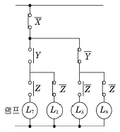
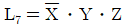
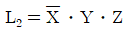
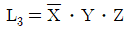
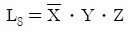
(정답률: 80%)
66. PI 제어동작은 프로세스 제어계의 정상특성개선에 흔히 사용된다. 이것에 대응하는 보상요소는?
- 동상 보상요소
- 지상 보상요소
- 진상 보상요소
- 지상 및 진상 보상요소
(정답률: 75%)
67. 출력의 변동을 조정하는 동시에 목푯값에 정확히 추종하도록 설계한 제어계는?
- 추치제어
- 프로세스제어
- 자동조정
- 정치제어
(정답률: 72%)
68. 100V, 60Hz의 교류전압을 어느 콘덴서에 가하니 2A의 전류가 흘렀다. 이 콘덴서의 정전용량은 약 몇 μF인가?
- 26.5
- 36
- 53
- 63.6
(정답률: 39%)
69. 유도전동기에서 동기속도는 3600rpm이고, 회전수는 3420rpm이다. 이때의 슬립은 몇 %인가?
- 2
- 3
- 4
- 5
(정답률: 45%)
70. 피드백제어의 전달함수가
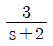
일 때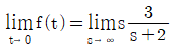
의 값을 구하면?- 0
- 3
- 3/2
- ∞
(정답률: 37%)
71. 다음 중 상용의 3상 교류에 대한 설명으로 틀린 것은?
- 각 전압이나 전류를 합하면 0이 된다.
- 전압이나 전류는 각각 (2π)/3의 위상차를 갖고 있다.
- 단상 교류보다 3상의 교류가 회전자장을 얻기가 쉽다.
- 기기에 Y결선을 하면 △결선보다 높은 전압을 얻을 수 있다.
(정답률: 69%)
72. 그림과 같은 R-L-C 직렬회로에서 단자전압과 전류 가 동상이 되는 조건은?
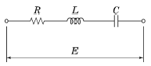
- ω=LC
- ωLC=1
- ω2LC=1
- ωL2C2=1
(정답률: 70%)
73. 종류가 다른 금속으로 폐회로를 두 접속점에 온도를 다르게 하면 전류가 흐르게 되는 것은?
- 펠티어효과
- 평형현상
- 제벡효과
- 자화현상
(정답률: 71%)
74. 계전기 접점의 아크를 소거할 목적으로 사용되는 소자는?
- 배리스터(Varistor)
- 바렉터다이오드
- 터널다이오드
- 서미스터
(정답률: 76%)
75. 그림과 같은 산호 흐름 선도에서 C/R 를 구하면?
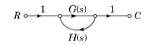
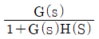
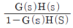
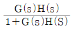
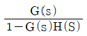
(정답률: 58%)
76. 단상 변압기 3대를 3상 병렬 운전하는 경우에 불가능한 운전 상태의 결선 방법은?
- △-△와 Y-Y
- △-Y와 Y-△
- △-△와 △-Y
- △-Y와 △-Y
(정답률: 70%)
77. 사이리스터를 이용한 정류회로에서 직류전압의 맥동률이 가장 작은 정류회로는?
- 단상반파
- 단상전파
- 3상반파
- 3상전파
(정답률: 69%)
78. 서보 전동기는 다음 중 어디에 속하는가?
- 조작기기
- 검출기
- 증폭기
- 변환기
(정답률: 83%)
79. 단위 계단함수 u(t-a)를 라플라스변환 하면?
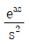
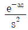
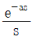
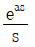
(정답률: 63%)
80. 3상 유도전동기의 제어방법에 대한 설명 중에서 틀린 것은?
- Y-△ 기동 방식으로 기동토오크를 줄일 수 있다.
- 역상 제동기법으로 전동기를 급속정지 또는 감속시킬 수 있다.
- 속도제어시에는 전압, 주파수 일정 제어기법이 유리하다.
- 단자전압이 정격전압보다 낮을 경우에는 슬립이 감소한다.
(정답률: 60%)